01 Что такое Blin
Blin — маленький настольный термометр с круглым экраном. Он не измеряет температуру сам: он показывает то, что присылают ваши датчики через MQTT, — в доме, на улице, в теплице, в холодильнике, в серверной.
Одно устройство держит до шести экранов — по экрану на каждый датчик. На каждом: текущая температура, цветная дуга, минимум и максимум, график за сутки по часам, состояние обогревателя или кулера. Когда температура уходит за пороги, Blin пищит и показывает снежинки или пламя.
Всё настраивается из браузера: у каждого Blin есть своя веб-админка. Несколько Blin в одном доме умеют синхронизировать настройки — меняете на одном, остальные подхватывают.
Прошивка обновляется сама по Wi-Fi. Корпус печатается на 3D-принтере, без единого винта.
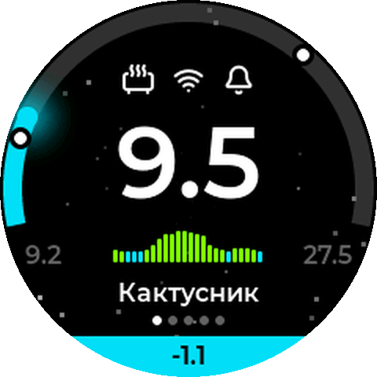
02 Что понадобится
| Что | Подробности |
|---|---|
| Плата Wemos Lolin S2 Mini | ESP32-S2, 4 МБ флеш, 2 МБ PSRAM, разъём USB-C. Именно S2 Mini: прошивка собрана под этот чип и эту распиновку. |
| Круглый дисплей 1,28″ GC9A01 | 240×240, SPI, на плате-«хвостике» с семью пинами VCC GND SCL SDA DC CS RST. Иногда маркируется GS9A01. |
| Гребёнка 1×7, шаг 2,54 | Штыревой разъём: соединяет дисплей и плату напрямую, без проводов. |
| Пассивный зуммер Ø12 мм | Пьезо/электромагнитный без генератора, ножки с шагом 7,62 мм. Громче всего звучит на 2800 Гц — под это подобраны сигналы. |
| Корпус | Две детали, печать из PETG. STL и 3MF — на главной странице сайта, кнопка «Модели корпуса». |
| Кабель USB-C | Для питания и первой прошивки. Подойдёт любой зарядник на 5 В. |
| Паяльник | Всего 9 точек пайки. |
| MQTT-брокер | Сервер, через который датчики передают данные. Если у вас Home Assistant — он, скорее всего, уже есть. Подробности — в разделе MQTT. |
Компьютер с Chrome или Edge нужен один раз — для первой прошивки прямо с сайта. Дальше всё делается с телефона.
03 Сборка
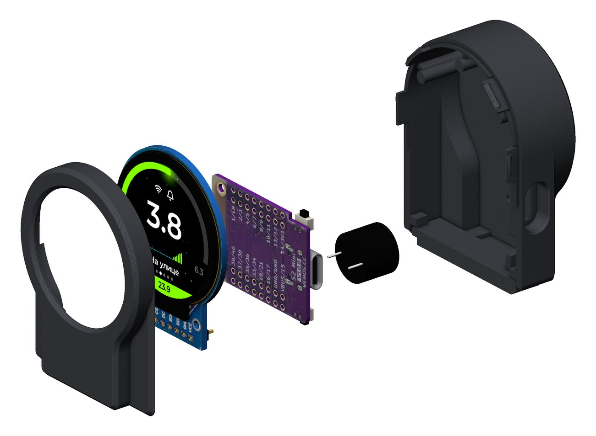
Электрика: дисплей садится на плату
Проводов нет. Плата S2 Mini лежит за дисплеем, параллельно ему. Семь пинов дисплея через гребёнку впаиваются в левый внешний ряд S2 Mini — если держать плату USB-разъёмом вверх, это ряд от VBUS вниз. Пины совпадают один к одному, ничего перекрещивать не нужно:
| Дисплей | S2 Mini | Назначение |
|---|---|---|
VCC | VBUS | питание 5 В от USB (первое отверстие от разъёма) |
GND | GND | земля |
SCL | 16 | тактовый сигнал SPI |
SDA | 18 | данные SPI (MOSI) |
DC | 33 | команда / данные |
CS | 35 | выбор чипа |
RST | 37 | сброс дисплея |
Зуммер
Зуммер стоит на стороне компонентов S2 Mini, поверх чипа, на ножках высотой около 2 мм. Его ножки идут во внутренний левый ряд: в отверстия GND (второе от USB) и 34 (пятое) — между ними ровно три шага, как у 12-миллиметровых зуммеров. Полярность для пассивного зуммера не важна. Хвосты ножек и гребёнки откусите заподлицо: снизу у платы мало места.
Порядок пайки
- Вставьте гребёнку длинными концами в дисплей со стороны, противоположной экрану, и пропаяйте 7 пинов на плате дисплея.
- Наденьте S2 Mini на гребёнку: сторона компонентов (чип, USB) смотрит от дисплея,
VBUS— подVCC. Плата прижата к пластиковой планке гребёнки. - Пропаяйте гребёнку на S2 Mini, откусите хвосты.
- Вставьте зуммер в
GNDи34внутреннего ряда со стороны компонентов, пропаяйте с обратной стороны, откусите. - Подключите USB — подсветка дисплея загорится сразу (она подключена к питанию напрямую). Изображения пока нет: плату нужно прошить.
Корпус
Корпус — две детали на защёлках, без винтов и клея.
- Передняя панель держит дисплей на штифтах: они входят в монтажные отверстия платы дисплея.
- Задняя часть надевается сверху и защёлкивается четырьмя пальцами. Её дно — большая клавиша на гибких шарнирах. Нажмите на макушку устройства, корпус чуть наклонится, и толкатель нажмёт кнопку 0 (Boot) на плате. Так весь Blin становится одной большой кнопкой.
- Для USB-C внутри есть рукав до самого гнезда: снаружи видно только гнездо. Для зуммера сзади — решётка.
Печать
- Материал — PETG для обеих деталей: шарниры кнопки и пальцы защёлок должны гнуться, а PLA от этого трескается.
- STL и 3MF уже повёрнуты как надо для печати (3MF компактнее и сразу в миллиметрах — удобнее для Bambu Studio, PrusaSlicer, Orca). Переднюю панель печатайте стыком на стол, лицом вверх: поддержки нужны только внутри. Заднюю часть — задней стенкой на стол, с поддержками под полкой.
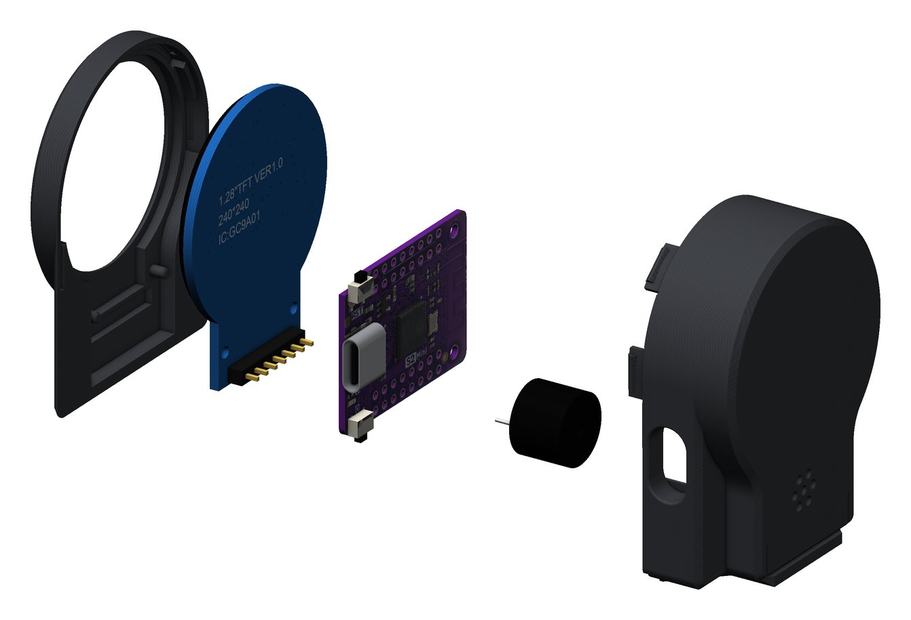
Сборка в корпус
- Положите переднюю панель лицом вниз и наденьте собранный «бутерброд» дисплей + плата на штифты: экран в окно, хвостик дисплея к широкой части панели (вниз).
- Наденьте заднюю часть сверху, ровно по оси, и прижмите до щелчка всех защёлок.
- Чтобы открыть, подденьте отвёрткой в пазах снизу, по углам стыка.
- В корпусе устройство стоит хвостиком дисплея вниз, поэтому картинку нужно повернуть на 180°. Проще всего сделать это сразу при первой настройке, в поле «Поворот экрана» (см. режим AP). Можно и потом: трижды нажать кнопку, и ещё раз трижды. Каждое тройное нажатие — поворот на 90°.
04 Прошивка
Новую плату прошивают по USB один раз, прямо с сайта. Дальше прошивка обновляется по Wi-Fi.
Первая прошивка — из браузера
- Откройте главную страницу сайта в Chrome или Edge на компьютере. Safari, Firefox и мобильные браузеры не умеют работать с USB-портом.
- Подключите плату кабелем и переведите её в режим загрузки: зажмите кнопку 0, нажмите и отпустите RST, затем отпустите 0. Кнопки — на краю платы рядом с USB. Если плата уже в корпусе, сначала откройте его.
- Нажмите «Скачать прошивку» → «Прошить новое устройство по USB».
- Выберите версию (сверху — последняя) и нажмите «Подключить и прошить». В окне браузера выберите порт платы (ESP32-S2).
- Дождитесь «Готово». Если экран не ожил сам — нажмите RST.
Прошивальщик записывает полный набор для чистой платы: загрузчик, таблицу разделов, служебный раздел OTA и саму прошивку. Свою прошивку туда не подсунуть — на выбор только официальные версии.
Обновления по Wi-Fi
Настроенный Blin сам проверяет обновления раз в 6 часов. Если в админке включено «Автоматически устанавливать обновления», он ставит новую версию и перезагружается. Если выключено — на странице админки появится плашка «Доступно обновление» с кнопкой «Установить».
Вручную — в админке, внизу кнопка «Обновление прошивки»:
- «Проверить обновления» → «Скачать и установить» — с сайта;
- «Загрузить файл прошивки .bin» — файл, скачанный с сайта кнопкой «Скачать прошивку».
Обновление сохраняет все настройки и историю.
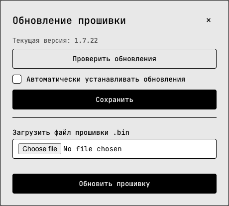
05 Первое включение: режим AP
Пока Blin не знает вашу сеть Wi-Fi, он сам становится точкой доступа (AP — access point) с открытой сетью blin_XXXXXX. Шесть символов — хвост MAC-адреса платы, у каждого устройства свои. На экране — QR-код этой сети.
- Наведите камеру телефона на QR-код на экране — телефон предложит подключиться к
blin_XXXXXX. Или выберите эту сеть в списке Wi-Fi вручную; пароля у неё нет. - Страница настройки откроется сама — как в гостиничном Wi-Fi. Если не открылась, наберите в браузере
192.168.4.1. - Заполните форму (о полях — ниже) и нажмите «Сохранить и перезагрузить».
- Blin перезагрузится и подключится к вашей сети, а
blin_XXXXXXпропадёт. Телефон вернётся в обычный Wi-Fi. - Один раз, при первом запуске, вместо названия экрана Blin покажет свой IP-адрес. Наберите его в браузере — откроется админка.
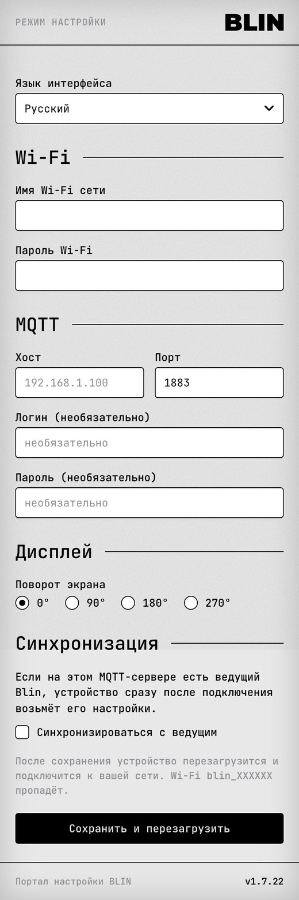
Поля портала
- Язык интерфейса
- Язык админки и надписей на экране: русский, английский, немецкий, французский, испанский, португальский. Потом его можно сменить в настройках.
- Имя Wi-Fi сети, пароль
- Ваша домашняя сеть. ESP32-S2 работает только в диапазоне 2,4 ГГц, сеть 5 ГГц он не увидит.
- MQTT: хост, порт
- Адрес брокера, например
192.168.1.10и1883. Можно оставить пустым и заполнить позже в админке: Blin заработает и без MQTT, просто без данных. - Логин и пароль MQTT
- Если брокер их требует.
- Поворот экрана
- Для устройства в печатном корпусе выберите 180°.
- Синхронизироваться с ведущим
- Если в доме уже есть настроенный ведущий Blin, отметьте — новое устройство сразу после подключения возьмёт его экраны, цвета и пороги. См. Ведущий и ведомые.
blin_XXXXXX с уже заполненной формой. Поправьте и сохраните. Если просто роутер был выключен — перезагрузите Blin (переподключите кабель), когда сеть появится.Как Blin стартует
При каждом включении на экране сначала жёлтая полоса «Подключаю Wi-Fi», затем на ней адрес http://…, затем рабочий экран. Рабочий экран появляется сразу после Wi-Fi, не дожидаясь MQTT: пока данных нет, вместо цифр «моргает» рожица O_o.
06 Экран устройства
- Дуга — шкала от минимума до максимума, заданных для экрана. Её цвет — зона: холодно, норма, жарко, нет свежих данных.
- Иконки: экстра-иконка (обогреватель или кулер), Wi-Fi, колокольчик. Колокольчик белый, если звуковые оповещения включены хотя бы на одном экране и звук не заглушён; серый — если выключены.
- Температура сейчас, последнее значение из MQTT. Треугольник справа — куда она движется: ▲ растёт, ▼ падает по сравнению с предыдущим значением. Пришло то же число — треугольник остаётся прежним. Сразу после включения его нет, он появится при первом изменении.
- Минимум и максимум за последние 24 часа. Их не нужно присылать: Blin считает их сам по графику и текущему значению.
- График за сутки: 24 столбика, по одному на час, каждый — средняя температура за час. Самый правый — текущий час. Столбики раскрашены по зонам. Отрицательные растут вниз от нулевой линии. Серые — часы, когда данных не было.
- Название экрана. У главного экрана после названия стоит звёздочка ★ (если экранов больше одного).
- Точки — сколько всего экранов и какой открыт (белая). Жёлтая точка — у этого экрана перестал отвечать датчик. Мигающая красная или голубая — экран за порогом оповещения.
- Нижняя панель всегда показывает главный экран. Открыт сам главный — в ней часы
ЧЧ:ММс мигающим двоеточием, любой другой — температура главного. Цвет панели — зона главного экрана. Так главное значение видно всегда, что бы ни было открыто. - Белые кружки на дуге — пороги звуковых оповещений, если они включены.
Состояния
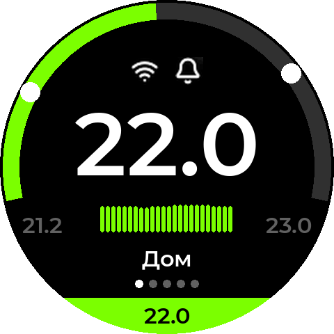
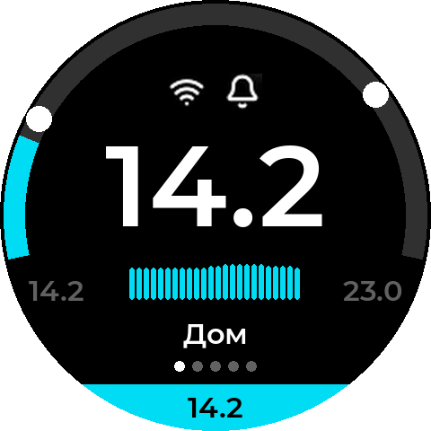
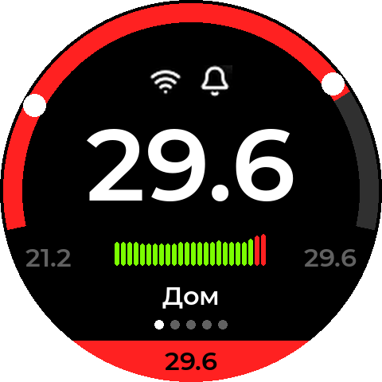
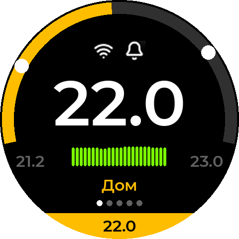
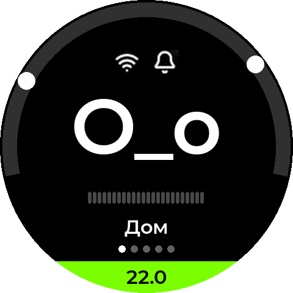
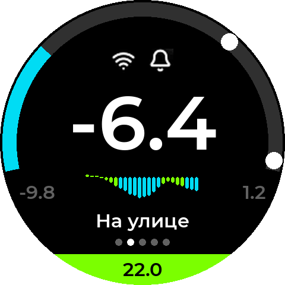
Живые мелочи
- Хулиганство. Раз в 20–40 минут цифры на секунду превращаются в
O_o→o_O→>_<. Это не сбой, это характер. - Скринсейвер. Если включён в настройках, раз в 5 минут экран на 10 секунд заливается цветным шумом. Это бережёт от выгорания одну и ту же картинку.
- 80-е. Переключение экранов, хулиганство и оповещения сопровождаются VHS-помехами: снег, разрыв строк, RGB-сдвиг. Набор эффектов и их сила — в настройках.
- Часовой пояс определяется сам по IP-адресу. Время синхронизируется по интернету (NTP).
08 MQTT: откуда берутся данные
Что такое MQTT — простыми словами
MQTT — это «почтовое отделение» для умного дома. Посередине стоит брокер — небольшая программа на компьютере, Raspberry Pi, сервере Home Assistant или в облаке. Устройства не общаются друг с другом напрямую. Датчик публикует сообщение в топик — адрес вида home/kitchen/temperature. Все, кто подписан на этот топик, тут же получают сообщение.
Удобно, что одну температуру одновременно видят Blin, Home Assistant, телефон и кто угодно ещё. А Blin достаточно знать адрес брокера и названия топиков.
Где взять брокер
- Home Assistant — дополнение «Mosquitto broker». Если у вас Zigbee2MQTT, брокер уже есть.
- Отдельно — Mosquitto на любом компьютере или Raspberry Pi в домашней сети. Стандартный порт —
1883. - В облаке — например, HiveMQ Cloud. Для облака используйте порт
8883: на этом порту Blin сам включает шифрование (TLS). Логин и пароль — из панели облачного брокера.
Что Blin ждёт в топиках
У каждого экрана два топика. Свои значения задаются в настройках экрана.
| Топик | Что в нём | Пример сообщения |
|---|---|---|
| температура | Просто число в градусах, точка как разделитель. Не JSON, без единиц измерения. | 21.5, -3 |
| экстра-иконка (необязательный) | Одно из слов: heater_on, heater_off, cooler_on, cooler_off, none. См. Экстра-иконки. | heater_on |
По умолчанию у первого экрана топики blin_XXXXXX/screen_1/temperature и blin_XXXXXX/screen_1/extra_icon (XXXXXX — как в имени AP-сети). Но лучше указать топики, в которые уже пишут ваши датчики.
Минимум, максимум и график присылать не нужно: Blin считает их сам. Каждое пришедшее число попадает в среднее за текущий час.
{"temperature":21.5,"humidity":40}. Blin такое сообщение не разберёт. Нужен отдельный топик только с числом — сделать его помогут Home Assistant или Node-RED (пример ниже).Проверка с компьютера
Утилита mosquitto_pub входит в пакет Mosquitto. Отправьте число в топик экрана — Blin покажет его через долю секунды:
mosquitto_pub -h 192.168.1.10 -t home/kitchen/temperature -m 21.5 -r
mosquitto_pub -h 192.168.1.10 -t home/kitchen/heater -m heater_on -r
# с логином: -u user -P password облако: -p 8883 --capath /etc/ssl/certsФлаг -r (retained) просит брокер запомнить последнее значение. Тогда Blin получит его сразу после перезагрузки, не дожидаясь следующего замера. Советуем публиковать температуру именно так.
Home Assistant: датчик → Blin
Автоматизация, которая пересылает показания любого сенсора HA в топик Blin при каждом изменении:
alias: Blin — кухня
triggers:
- trigger: state
entity_id: sensor.kitchen_temperature
actions:
- action: mqtt.publish
data:
topic: home/kitchen/temperature
payload: "{{ states('sensor.kitchen_temperature') }}"
retain: trueТак же для обогревателя или кондиционера — публикуйте heater_on / heater_off по состоянию выключателя:
alias: Blin — обогреватель теплицы
triggers:
- trigger: state
entity_id: switch.greenhouse_heater
actions:
- action: mqtt.publish
data:
topic: home/greenhouse/heater
payload: "{{ 'heater_on' if is_state('switch.greenhouse_heater', 'on') else 'heater_off' }}"
retain: trueСлужебные топики Blin
Кроме ваших топиков, Blin использует несколько своих — всё начинается с blin/. Трогать их не нужно, но полезно знать, что это не мусор:
blin/devices/…— «визитки» устройств для списка «Устройства Blin»;blin/leader/cfg— настройки ведущего для ведомых;blin/sync/…— после перезагрузки Blin спрашивает у соседей график за пропущенные часы, если они показывают тот же топик.
Если брокер раздаёт права по топикам (ACL), разрешите Blin читать и писать в blin/#.
09 Веб-админка
У каждого Blin есть своя страница управления. Откройте в браузере на телефоне или компьютере в той же сети:
- IP-адрес устройства, например
http://192.168.1.33. Его показывает экран при первом запуске, роутер в списке клиентов и любой другой Blin в блоке «Устройства Blin»; - или имя:
http://blin-xxxxxx.local. Имя задаётся в настройках, по умолчанию —blin-и хвост MAC-адреса.
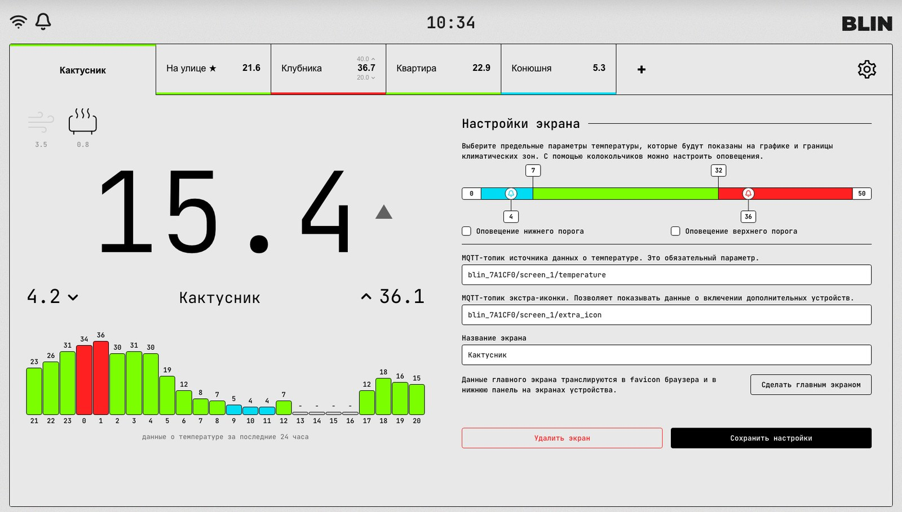
Страница обновляется сама. Пока она открыта:
- favicon вкладки браузера показывает температуру главного экрана и красится в цвет его зоны;
- если включено «Дублировать оповещения в браузере», страница пищит вместе с устройством;
- внизу — IP, имя, Wi-Fi и сила сигнала, состояние MQTT, время работы, температура чипа и версия прошивки.
На телефоне вкладки сворачиваются в меню ☰. Админку можно добавить на домашний экран («На экран Домой» в Safari, «Установить приложение» в Chrome) — она откроется как отдельное приложение.
Внизу страницы — три кнопки: «Обновление прошивки», «Импорт / Экспорт» и «Лог устройства» (последние 20 событий: подключения, ошибки, синхронизация).
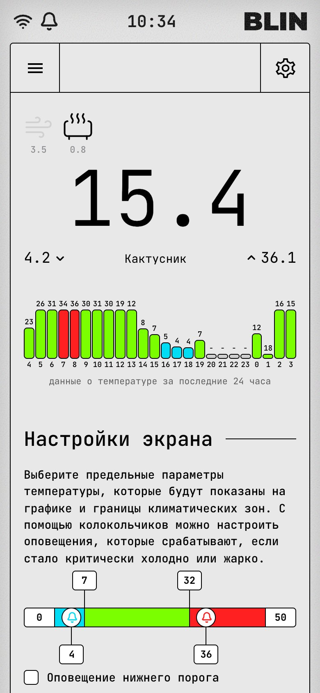
10 Экраны (страницы)
Экран — это один источник температуры со своим названием, шкалой, порогами и графиком. Их может быть от 1 до 6.
Добавить экран
- Нажмите «+» справа от вкладок.
- Введите название — оно будет и на вкладке, и на экране устройства. Пишите коротко: на круглом экране помещается около 15 символов.
- Введите MQTT-топик температуры и нажмите «Добавить».
- Устройство перезагрузится. Откройте новую вкладку и настройте шкалу и пороги.
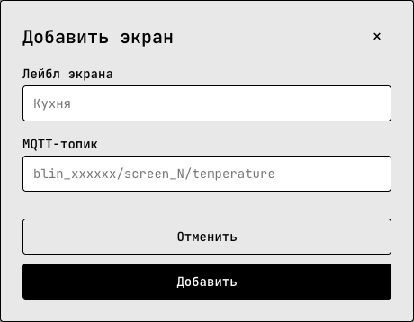
Настроить экран
Откройте вкладку экрана. Справа:
- шкала, зоны и оповещения — один составной ползунок, о нём ниже;
- MQTT-топик температуры — обязательный;
- MQTT-топик экстра-иконки — по желанию;
- название экрана.
«Сохранить настройки» применяет изменения этого экрана — устройство перезагрузится за несколько секунд, график и моточасы сохранятся.
Главный экран
Один экран — главный, на его вкладке ★. Его температура видна всегда: в нижней панели устройства на любом экране и в favicon браузера. Назначьте главным самое важное — например, «На улице». Кнопка «Сделать главным экраном» есть на вкладке любого экрана.
Главный экран выбирается на каждом устройстве отдельно: на кухонном Blin главной может быть кухня, в спальне — улица.
Порядок экранов
Вкладки можно перетаскивать мышью: возьмите вкладку и отпустите там, куда её поставить, — линия покажет место. На телефоне то же самое в меню экранов (☰), за ручку ⠿ слева от названия. Новый порядок сразу появляется и на устройстве — кнопка листает экраны так же, как идут вкладки. Перезагрузки нет, график и настройки едут вместе с экраном.
Удалить экран
Кнопка «Удалить экран» есть на вкладке каждого экрана. Удаление нельзя отменить: настройки и график экрана пропадут, устройство перезагрузится. Единственный экран удалить нельзя.
Главный экран удалить нельзя: сначала сделайте главным другой экран, потом удалите этот. Кнопка на главном подскажет то же самое.
11 Ползунки температуры
На вкладке каждого экрана — один составной ползунок, который задаёт сразу три вещи: шкалу, климатические зоны и пороги оповещений.
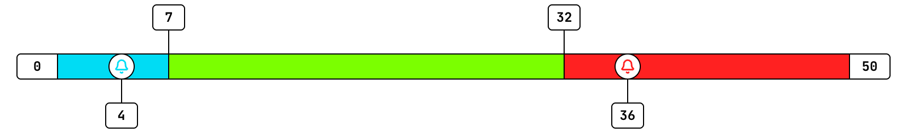
- Края — шкала
- Белые поля по краям (
0и50) — минимум и максимум дуги на экране устройства. В них можно вписать любые числа, в том числе отрицательные. Подберите так, чтобы обычная температура этого места занимала середину дуги: для комнаты 10…35, для улицы −20…+35, для морозилки −30…0. - Флажки сверху — зоны
- Два чёрных флажка (
7и32) — границы зон. Ниже левого — холодно, между ними — норма, выше правого — жарко. Зона определяет цвет дуги, столбиков графика, полосы вкладки и — для главного экрана — нижней панели и favicon. Сама по себе смена зоны не пищит. - Колокольчики снизу — оповещения
- Два колокольчика (
4и36) — пороги звуковых оповещений. Работают, только если отмечены галочки «Оповещение нижнего порога» / «Оповещение верхнего порога». Тогда пороги появляются на дуге устройства белыми кружками.
Тянуть можно и сами ручки, и подписи с числами. Ручки не заходят друг за друга: нижняя граница зоны не станет выше верхней. Значения — целые градусы.
12 Оповещения
Температура за порогом
Когда температура пересекает включённый порог колокольчика, Blin:
- пару секунд мигает: голубой экран со снежинкой при холоде, красный с пламенем при жаре;
- трижды пищит;
- если открыта админка с включённым «Дублировать оповещения в браузере» — пищит и браузер.
Оповещение срабатывает один раз при пересечении порога. Следующее будет, только когда температура вернётся за порог и снова его пересечёт.
Пороги проверяются на всех экранах, а не только на открытом. Если порог пересёк другой экран, Blin не переключается: он пищит, а точка этого экрана внизу мигает красным (жара) или голубым (холод), пока температура не вернётся за порог. В админке так же мигает цветная полоса на вкладке экрана.
Потеря связи с брокером
Если MQTT-брокер недоступен 3 минуты подряд, Blin даёт другой сигнал — два писка вниз по тону, «дин-дон». Сигнал повторяется раз в минуту, пока связь не вернётся. Так не пропустишь, что данные перестали обновляться.
Тишина
- Двойное нажатие кнопки глушит все звуки (и температурные, и «дин-дон»). Повторное — включает обратно. Колокольчик на экране показывает состояние.
- Галочка «Звуковые оповещения» в настройках — то же самое из админки.
- «Протестировать звук» в настройках коротко пищит устройством и браузером. Браузеры разрешают звук только после клика на странице, поэтому дублирование заработает после первого клика по админке.
13 Экстра-иконки и моточасы
Температура — следствие. Часто хочется видеть и причину: работает ли сейчас обогреватель или кулер (кондиционер, вентилятор, компрессор). Для этого у каждого экрана есть второй, необязательный топик — экстра-иконка.
| Сообщение | Экран устройства |
|---|---|
heater_on | белая иконка обогревателя — работает |
heater_off | серая иконка обогревателя — выключен |
cooler_on | белая иконка кулера — работает |
cooler_off | серая иконка кулера — выключен |
none | иконки нет |
В топике всегда одно состояние: cooler_on означает «кулер работает, обогреватель нет». Одновременно работающим может быть только один из двух — для отопления и кондиционера в одной комнате так и есть.
Моточасы
Blin считает, сколько часов за последние сутки работал каждый прибор. Это видно в админке, над большой температурой: обе иконки рядом, работающая — чёрная, выключенная — бледная. Под каждой — часы работы за 24 часа, например 3.5.
Считает само устройство, а не браузер, поэтому моточасы верны, даже если админку месяц никто не открывал. Счётчик переживает перезагрузку и обновление прошивки.
14 Настройки устройства
Шестерёнка справа от вкладок. Почти все изменения применяются кнопкой «Сохранить и перезагрузить» внизу — устройство перезагружается за несколько секунд.
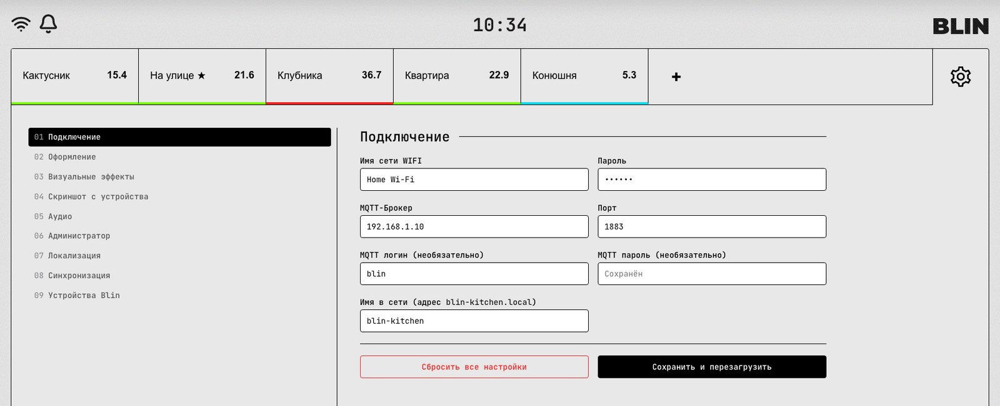
Подключение
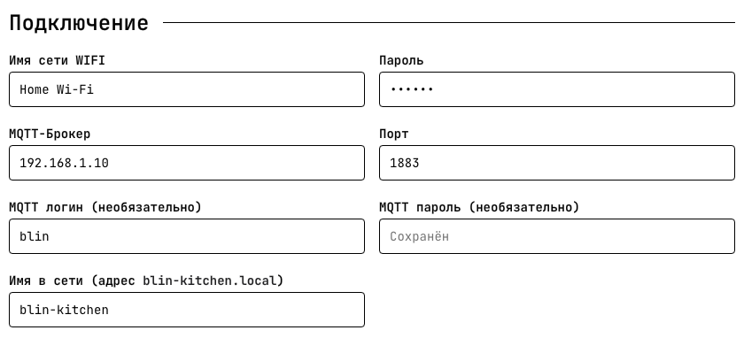
Wi-Fi, MQTT-брокер, логин и пароль брокера — то же, что в портале. Сохранённые пароли не показываются: пустое поле «Сохранён» значит «оставить как есть».
Имя в сети — по нему админка открывается как http://имя.local, его же видно в роутере и в списке «Устройства Blin». Латиница, цифры и дефис.
Оформление и эффекты
- Цвета зон — холод, норма, жара и «ожидание» (жёлтый: нет данных, датчик молчит). Применяются к экрану устройства, графику и вкладкам. «Сбросить к исходным цветам» возвращает заводские.
- Пресет оформления — готовые схемы. «Стандартная» — заводская. «Pip-Boy» — зелёный монохром с картинкой на фоне и CRT-линиями, как в Fallout.
- Поворот экрана — 0/90/180/270°.
- Скринсейвер — периодическая заливка шумом, бережёт экран.
- Тема интерфейса — светлая или тёмная админка; к экрану устройства не относится.
- Визуальные эффекты — 80-е: VHS-снег, разрыв строк, RGB-аберрация (сила каждого — ползунком), CRT-сканлайны поверх экрана, звёздное небо на фоне. «Нравственный закон во мне» — пара к звёздному небу, дань Канту.
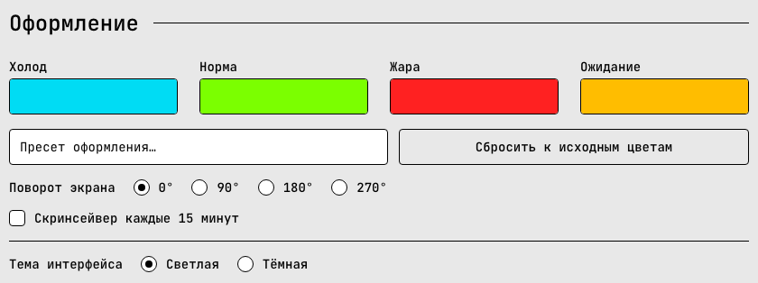
Скриншот с устройства
Блок показывает, что сейчас на экране Blin, — удобно, если устройство в другой комнате. Стрелки ← → переключают экраны устройства прямо отсюда, «Обновить» делает новый снимок.
Аудио
- Звуковые оповещения — общий выключатель звука (то же, что двойное нажатие кнопки).
- Дублировать оповещения в браузере — открытая админка пищит вместе с устройством.
Администратор, локализация, синхронизация
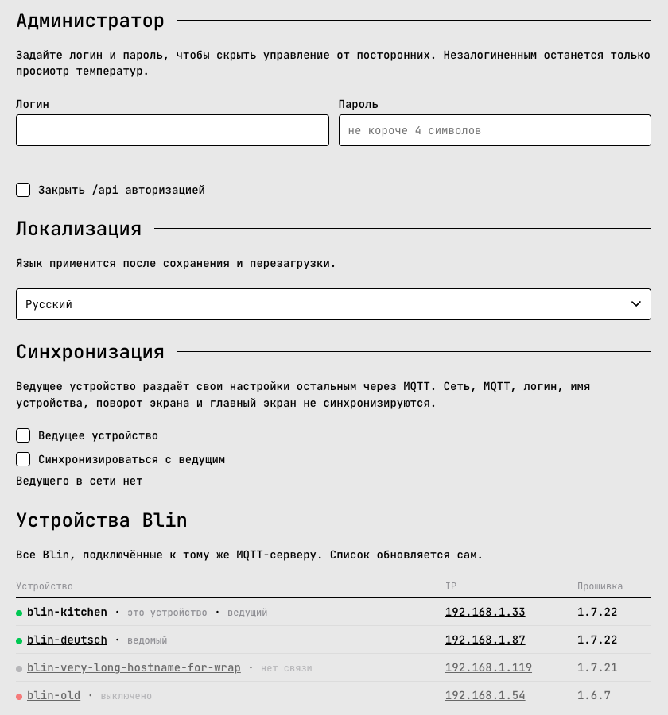
Администратор — логин и пароль для админки, см. Пароль и гостевой режим.
Локализация — язык админки и надписей на экране устройства.
Синхронизация и Устройства Blin — см. Ведущий и ведомые.
Внизу — «Сбросить все настройки»: то же, что удержание кнопки 5 секунд. Стирает всё, включая Wi-Fi, и переводит Blin в режим AP.
15 Пароль и гостевой режим
По умолчанию админка открыта всем в вашей сети. Если Blin стоит там, где сеть общая (офис, гости, дача с соседями), задайте логин и пароль в блоке «Администратор» (пароль — от 4 символов).
- Без входа админка показывает только температуры и графики — гостевой режим. Шестерёнки и настроек экранов не видно.
- Чтобы войти, нажмите кнопку с человечком внизу страницы, рядом с «Обновление прошивки», и введите логин и пароль. Браузер запомнит вход. Там же — выход.
- «Закрыть /api авторизацией» (включено по умолчанию) дополнительно прячет от гостей служебные данные — адреса устройства и соседей в сети.
- Пароль нужен и для роли ведущего: иначе любой в сети мог бы через него менять настройки всех Blin.
16 Ведущий и ведомые
Когда Blin в доме несколько, настраивать каждый по отдельности утомительно. Назначьте один ведущим, остальные — ведомыми. Всё, что вы меняете на ведущем, через несколько секунд само появится на ведомых.
Что синхронизируется, а что нет
Передаётся ведомым
- набор экранов: названия, топики, шкалы, зоны, оповещения;
- цвета, пресет, фон, эффекты, скринсейвер;
- язык и тема админки, автообновление, дублирование оповещений в браузере, «Закрыть /api».
У каждого своё
- Wi-Fi, MQTT, логин и пароль;
- имя устройства;
- поворот экрана — Blin может стоять по-разному;
- главный экран;
- история температур;
- мут звука (двойное нажатие кнопки).
Как настроить
- На будущем ведущем задайте логин и пароль администратора и сохраните — без пароля ведущим стать нельзя.
- Там же, в блоке «Синхронизация», отметьте «Ведущее устройство» и сохраните.
- На остальных отметьте «Синхронизироваться с ведущим». Для нового Blin это можно сделать прямо в портале режима AP.
- Ведомый перезагрузится уже с настройками ведущего. В блоке «Синхронизация» он покажет «Ведущий в сети: имя».
Правила
- Ведущий всегда один — последний назначенный. Отметили ведущим другое устройство — прежний сам станет ведомым и подтянет настройки нового.
- Правки на ведомом откатываются. Поменяли что-то из общих настроек на ведомом — он вернёт настройки ведущего. Хотите отличий — снимите галочку синхронизации.
- История на ведомом сохраняется, если не поменялись число экранов и их топики. Иначе график начнётся заново.
- Ведущий может быть выключен: ведомые помнят последние полученные настройки, а брокер хранит их до его возвращения.
Устройства Blin
Блок в настройках показывает все Blin на том же брокере: имя, IP-адрес (ссылкой — в один клик к админке соседа), версию прошивки, роль и состояние. Зелёная точка — в сети, серая — давно не выходил на связь, красная — выключен. Список обновляется сам.
Устройство, которое вы больше не используете, остаётся в списке как «выключено». Чтобы убрать его совсем, удалите его retained-запись на брокере:
mosquitto_pub -h 192.168.1.10 -t blin/devices/blin-XXXXXX -r -n17 Обновления, бэкап, сброс
Импорт и экспорт
«Импорт / Экспорт» внизу админки.
- Экспортировать настройки — скачивает текстовый файл: экраны, цвета, эффекты и прочие настройки. Wi-Fi и пароли туда не попадают.
- Импортировать — загружает такой файл. Подходит для восстановления после сброса и для переноса настроек на другой Blin без синхронизации. Импорт заменяет все экраны и стирает историю температур.
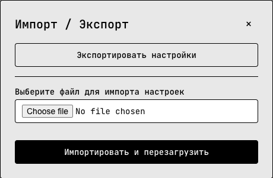
Лог устройства
Последние 20 событий с временем: подключение к Wi-Fi и MQTT, обрывы, проверки обновлений, синхронизация с ведущим. Первое, куда стоит смотреть, если что-то пошло не так.
Что где хранится
Настройки и график за сутки хранятся в памяти устройства и переживают отключение питания и обновление прошивки. Стирают их только полный сброс, импорт и прошивка по USB с флажком «Стереть плату целиком».
18 Сценарии использования
Дом и улица
Два экрана: «Дом» (шкала 10…35, зоны 19/26) и «На улице» (−25…+35, зоны 0/25). Главный — улица: её температура всегда в нижней панели, а на главном экране — часы.
Теплица с обогревателем
Экран «Теплица», зоны 12/30, колокольчики 5 и 38. Топик экстра-иконки — состояние реле обогревателя (heater_on/heater_off). Моточасы покажут, сколько он грел за ночь.
Холодильник и морозилка
Морозилка: шкала −30…0, зоны −22/−15, верхний колокольчик на −10 — пищит, если дверь не закрылась. Отрицательные часы графика растут вниз от нуля.
Серверная или кладовка
Экран со шкалой 15…45, верхний колокольчик на 35, экстра-иконка — кондиционер (cooler_on/cooler_off). Пропал брокер — Blin сам скажет «дин-дон».
Несколько комнат — несколько Blin
Кухонный Blin — ведущий, в спальне и детской — ведомые. Экраны и пороги правятся в одном месте, а главный экран у каждого свой: в детской — детская, на кухне — улица.
Дача
Облачный брокер (порт 8883) — и Blin в городской квартире показывает температуру в дачном доме. Колокольчик на +3 предупредит, что отопление отключилось, «дин-дон» — что пропала связь.
Подарок
Соберите, прошейте и отдайте: при первом включении получатель сам настроит Wi-Fi через QR-код на экране. Ваш облачный брокер и топики можно вписать заранее.
Издалека
Админка не нужна, чтобы смотреть: добавьте её на домашний экран телефона, включите «Дублировать оповещения в браузере» и держите вкладку открытой на рабочем компьютере.
19 Если что-то не так
Экран горит, но ничего не показывает
VCC–VBUS и GND.Прошивальщик не видит плату
Не появляется сеть blin_XXXXXX
Портал настройки не открылся сам
blin_XXXXXX и откройте в браузере http://192.168.4.1. Если телефон отключается от сети «без интернета», разрешите ему остаться в ней.После сохранения Blin снова показывает QR-код
Вместо цифр всё время «O_o»
mosquitto_pub (раздел 08). Подсказки — в «Логе устройства».MQTT «Отключен»
8883. Брокер должен быть доступен из той же сети, где Blin. Если брокер раздаёт права по топикам, разрешите blin/#.Экран пожелтел
Картинка вверх ногами или на боку
Пищит «дин-дон» каждую минуту
Кнопка-дно не нажимается или срабатывает сама
Настройки на ведомом сами возвращаются
20 Справочник
Железо
| Параметр | Значение |
|---|---|
| Плата | Wemos Lolin S2 Mini, ESP32-S2 240 МГц, 4 МБ флеш, 2 МБ PSRAM, нативный USB |
| Дисплей | GC9A01, 240×240, круглый, SPI: CLK 16, MOSI 18, DC 33, CS 35, RST 37 |
| Зуммер | GPIO 34, резонанс 2800 Гц |
| Кнопка | GPIO 0 (Boot) |
| Wi-Fi | 2,4 ГГц |
Сроки и интервалы
| Что | Сколько |
|---|---|
| Ожидание Wi-Fi при старте | ~12 с, затем режим AP |
| Экран желтеет без данных | 3 мин |
| Сигнал потери MQTT | через 3 мин, повтор раз в минуту |
| Проверка обновлений | раз в 6 ч |
| Хулиганская анимация | раз в 20–40 мин |
| Скринсейвер | раз в 5 мин, 10 с |
| График | 24 часа, столбик = среднее за час |
| Экранов | до 6 |
Адреса устройства
Для тех, кто хочет встроить Blin в свои скрипты:
| Адрес | Что отдаёт |
|---|---|
/ | админка |
/api | состояние в JSON: все экраны, температуры, история, моточасы, время, статус MQTT |
/screenshot | снимок экрана, BMP 240×240 |
/peers | список других Blin на брокере |
/screens/export | файл настроек (как кнопка «Экспортировать») |
Если задан пароль и включено «Закрыть /api авторизацией», служебные поля /api отдаются только после входа.